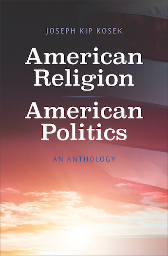

American Religion,
American Politics
A new anthology of primary sources for scholars and students,available now from Yale University Press.
Read the Introduction
-
"Joseph Kip Kosek has rendered valuable service by bringing together these sources. A careful perusal of American Religion, American Politics may bring some clarity to matters that have never been more contested in our public conversation."
Randall Balmer, Dartmouth College
-
"Kosek's collection breaks new ground in tying U.S. spiritual diversity to the swirl of American politics. From the 17th century to the 21st, the book captures the quest to infuse public life with religious energy while shielding it from religious control. Cogent introductions make these 34 documents ideal for classroom use."
Richard Wightman Fox, author of Lincoln's Body: A Cultural History
-
"Joseph Kip Kosek's intelligent, informative, and insightful assemblage of documents illuminates questions central to American history and intensely relevant at the present."
Mark A. Noll, co-editor, Religion and American Politics: From the Colonial Period to the Present